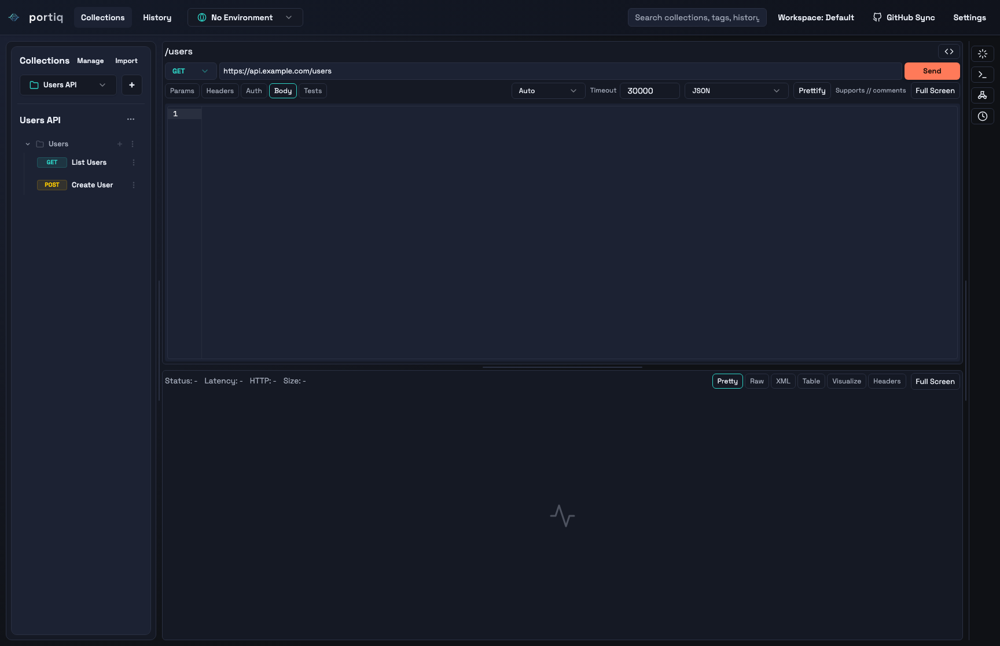
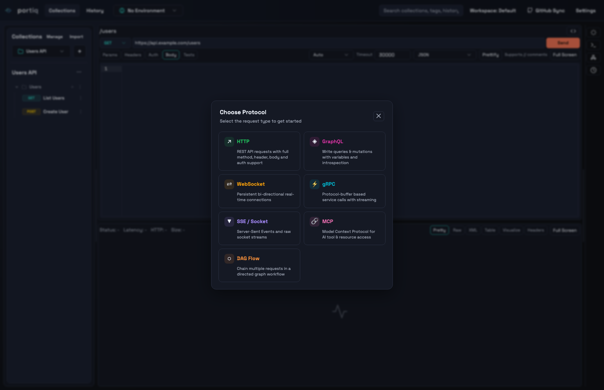
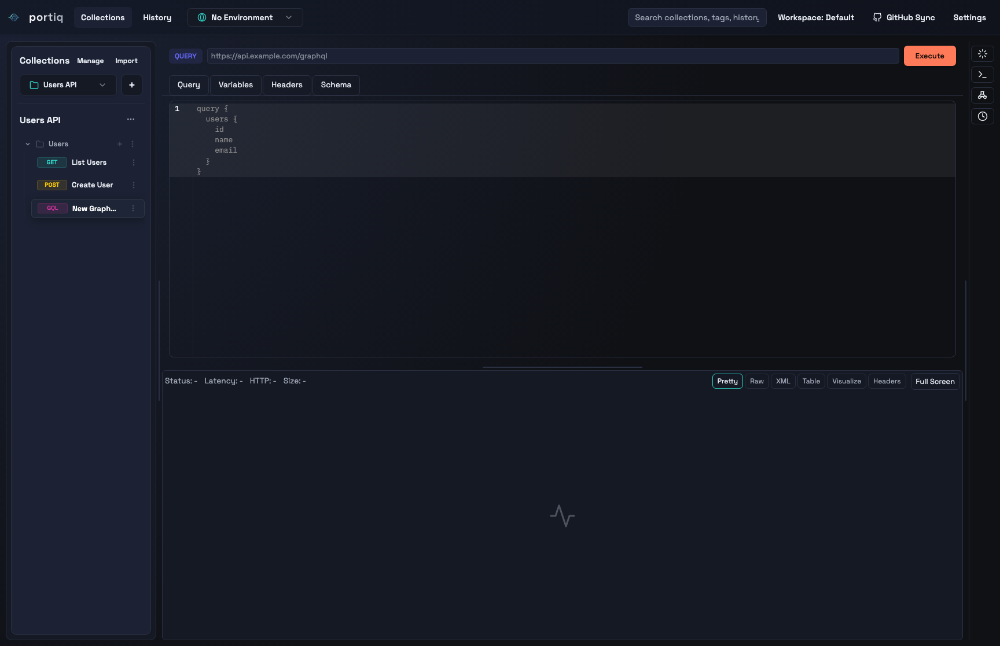
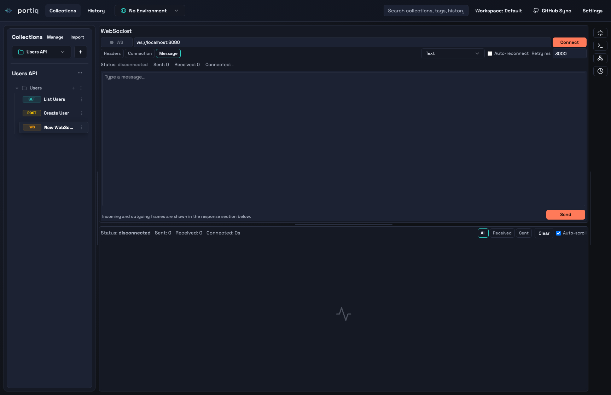
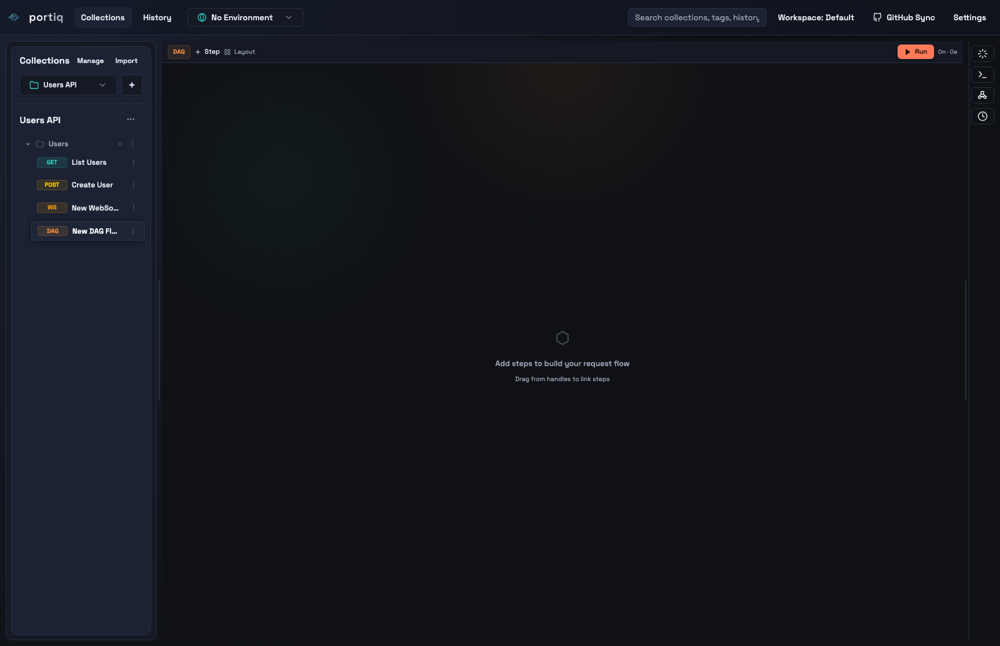
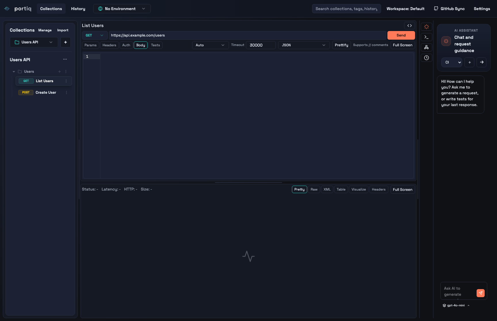

Desktop API Client
Ship requests faster with one focused workspace for modern APIs.
Portiq helps teams test APIs, inspect responses, manage environments, and explore workflows across HTTP, GraphQL, WebSocket, mock servers, and AI-assisted tooling.
Free-hosting friendly static site. Update the download button with your release URL whenever you're ready.
HTTP
GraphQL
WebSocket

Screenshots
See Portiq across real product workflows.
HTTP workspace
Author requests, manage bodies, inspect responses, and keep the full workflow in one view.

Request-type palette
Start from HTTP, GraphQL, WebSocket, DAG, MCP, and more without switching tools.

GraphQL
Write queries and mutations with dedicated editors and schema-aware workflow support.

WebSocket
Work with live connections, message composition, and stream inspection in one place.

DAG Flow
Build request workflows visually with a full-space graph canvas and protocol-aware steps.

AI assistant
Keep request guidance, generation, and debugging help close to the active request.
Features
Everything your API workflow needs in one desktop app.
Build requests with less friction
Create and organize requests, variables, headers, auth, and body payloads in a clean desktop-first workspace.
Work across modern protocols
Move between REST, GraphQL, WebSocket, SSE, mock server flows, MCP, and more without juggling separate tools.
Inspect responses visually
Switch between pretty, raw, table, XML, headers, and fullscreen views to debug faster and stay in flow.
Use AI where it actually helps
Generate requests, tests, and structured exploration steps without losing control of the underlying workflow.
Keep data local
Portiq is built as a desktop app, which makes it ideal for local environments, internal APIs, and secure development loops.
Share through GitHub sync
Keep collections portable and collaborative with GitHub-backed sync when your team is ready to share work.
Why Portiq
Built for developers who want speed without tool sprawl.
Focused
One app for request authoring, debugging, testing, and exploration.
Flexible
Handles solo experimentation and more structured team workflows.
Ready to grow
Perfect for an early-stage app landing page that can expand later.
Download
Start with a simple release link now, expand later.
Replace the placeholder URL below with your hosted installer, GitHub Releases page, or product download page.
Edit this link in /website/index.html